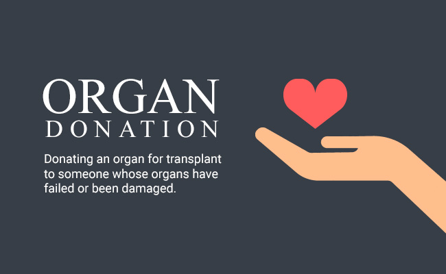

EVERYTHING YOU NEED TO KNOW ABOUT ORGAN DONATION
Organ donation is the surgical procedure of transplanting a healthy organ to replace a defective one in a patient, thus increasing their survival rate by years. Sometimes, organ donation is the only solution to chronic conditions such as kidney failure or leukaemia. The status of organ donation in India is appalling, with over 10 lakh people awaiting corneal transplantation, 50,000 in line for heart transplantation, and 20,000 in need of lung transplantation. This is especially unfortunate given the fact that an organ donor can donate 25 different organs to those in need and save up to nine lives, on an average. In India, the waiting lists for transplants grow longer each day.

Here’s all you need to know about organ donation in India:
How organ donation helps in organ failure
For those in need, a transplant is a second chance at life. Vital organs such as the kidney, heart, liver, and pancreas can be transplanted, meaning patients don’t have to rely on costly treatments to survive. For instance, a cornea transplant can give the patient the ability to see again.
Different types of organ donation
There are two categories of organ donation:
• Living donation: This occurs when a living person donates an organ for transplantation. The donor can be a family member, relative, friend, neighbour, or an in-law.
• Deceased donation: Here, the patient must register in a hospital that performs transplants. They are put on a waitlist, and when the organ from a suitable deceased donor (brain death) becomes available, the patient is informed.
Eligibility criteria
There is no age limit for organ donation. It can be started at as young as six weeks. The only essential thing is the health and condition of your organs. You can donate all your organs and tissues – heart, kidneys, lungs, corneas, pancreas etc. Even living organ transplants are feasible, especially in the case of kidneys where it’s possible to lead a healthy life even with a single kidney.
India’s legal position on organ donation
In India, organ donations are legal under the Transplantation of Human Organs Act (THOA), 1994, that also legalises the concept of ‘brain death’, a permanent cessation of all brain functions. In brain death, a person cannot sustain life, but vital body functions can be maintained in an ICU. Such patients are kept on artificial life support so that the organs are in a healthy condition.
Brain death is not the same as coma, which is a state of deep unconsciousness where the brain continues to function without external help. If there is any activity in the brain, a person won’t be declared brain dead.
In India, a panel of four doctors – a medical administrator, an authorised specialist, a neurologist, and the doctor treating the patient – must jointly declare someone brain dead before their organs can be harvested. A series of exhaustive tests is then performed to announce brain death.
How to register for organ donation
Organ donation is a voluntary process wherein you can fill up a consent form to donate your organs in the event of your demise. You need to fill a consent form that is available online at the National Organ and Tissue Transplant Organization (NOTTO) website.
It can also be accessed from the hospital that is approached for organ removal. In the case of deceased donation, a consent form is required from the lawful custodian of the body.
A potential donor can also get a donor card from organ donation agencies. While it is not legally binding, the card signifies one’s willingness to donate.
Why you should donate
With recent advances in medicine, people of all ages and with any medical history can become donors. However, the final call is taken after the doctors analyse the donor’s medical condition.
There are many in dire need of vital organs to sustain their life. Organ donor unavailability is a situation that can be avoided, in view of the number of people dying every day. Consider giving life to another person even in death – and save a life.